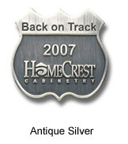
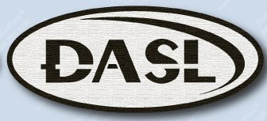

DASL Pins
Choice 1:
Note: the material will be the same as the one shown to the right and will be die cut: 
Choice 2:
Note: the material will be the same as the one shown to the right and will be die cut:
Choice 3:
Note: the material will be the same as the one shown to the right and will be die cut:
Choice 4:
Note: the material will be the same as the one shown to the right and will be die cut: or Hard/Sort Enamel
Choice 5:
Note: the material will be the same as the one shown to the right and will be die cut: or Hard/Sort Enamel
Choice 6:
 Note: the material will be the same as the one shown to the right and will be die cut: or Hard/Sort Enamel
Choice 7:
Note: the material will be the same as the one shown to the right and will be die cut: or Hard/Sort Enamel